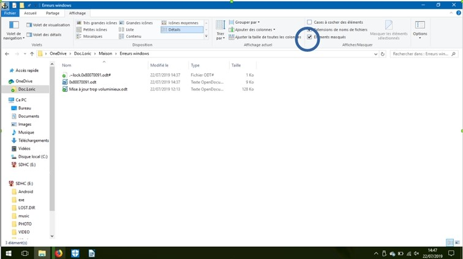
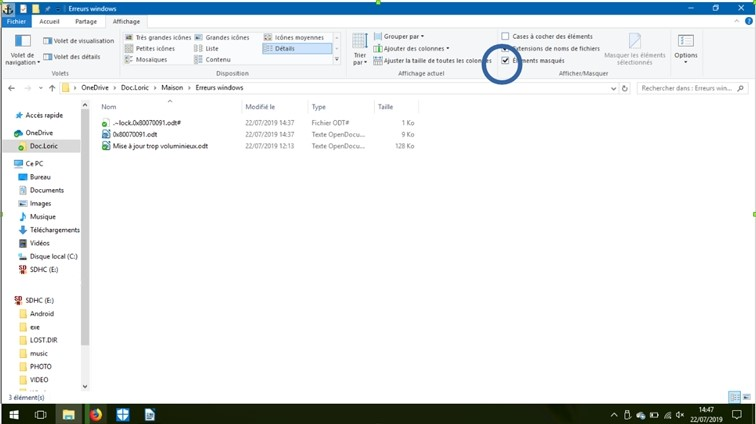

Si le problème n’est pas résolu, vérifier que les fichiers cache sont supprimés dans l’onglet Affichage, puis cochez Éléments masqués

Si des fichiers cache apparaissent, supprimez-les tous et vérifiez que le problème est résolu.
Version 1.0 (créé le 12/07/2020, modifié le 12/07/2020)
Fonctionne sur : Windows 8 et supérieur
Cette erreur est assez connue lorsque vous avez beaucoup de fichiers et de dossiers à supprimer, mais cela affiche cet erreur. Malheureusement, nous n’avons pas d’autres choix que de supprimer les fichiers d’abord, puis les dossiers un par un.

Si le problème n’est pas résolu, vérifier que les fichiers cache sont supprimés dans l’onglet Affichage, puis cochez Éléments masqués

Si des fichiers cache apparaissent, supprimez-les tous et vérifiez que le problème est résolu.